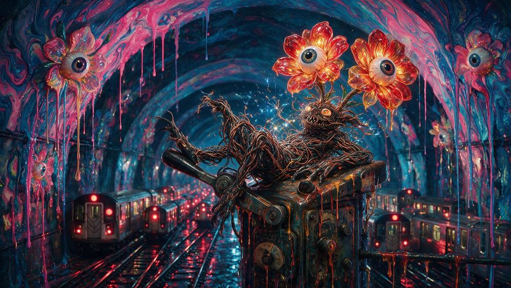
GLITCH
MOSH LAB
GIF · MP4 · WebM · PNG
The glitch instrument behind the mosh states. Sixty stackable effects, 48 presets, seeded looks, loops that never show a seam.
THE TOOLBOX · FREE IN YOUR BROWSER
Glitch it, extrude it, spin it, wrap it, repaint it, convert it. Every tool here started as something MLow needed in the studio and asked an AI to build. Nothing to install, and your files never leave your machine.

GLITCH
GIF · MP4 · WebM · PNG
The glitch instrument behind the mosh states. Sixty stackable effects, 48 presets, seeded looks, loops that never show a seam.
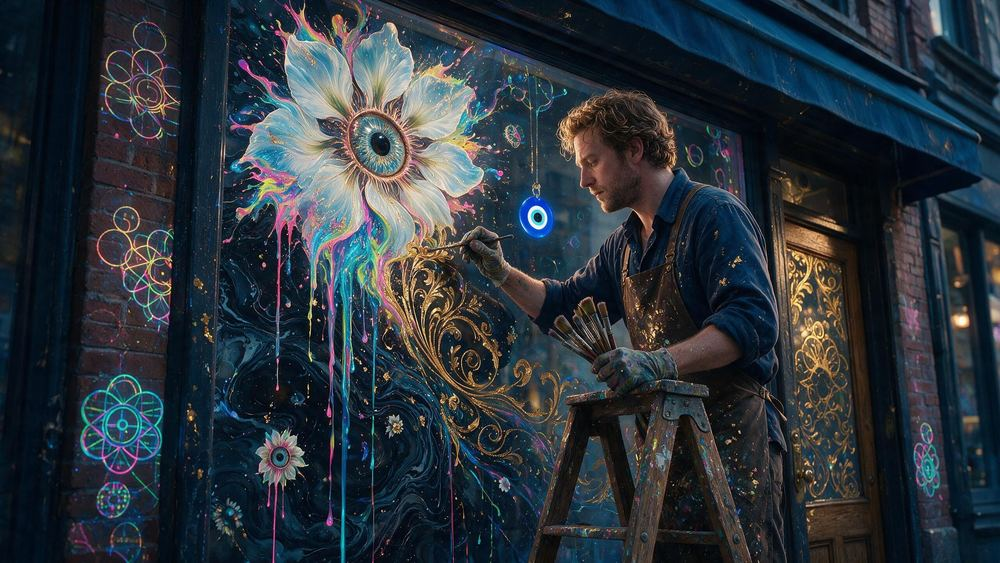
3D
SVG in, GLB · STL · PNG out
Turn flat artwork into real extruded 3D. Bevel it, light it, export a GLB for the web or an STL for the printer.
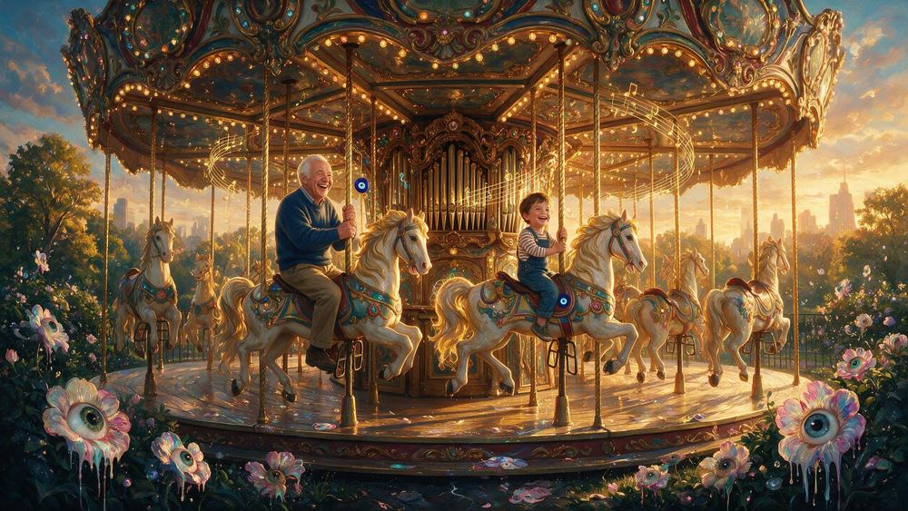
3D
GLB in, GIF · WebM out
A hype studio for 3D models. Drop a GLB into a world, pick a camera move, export a GIF that loops perfectly.
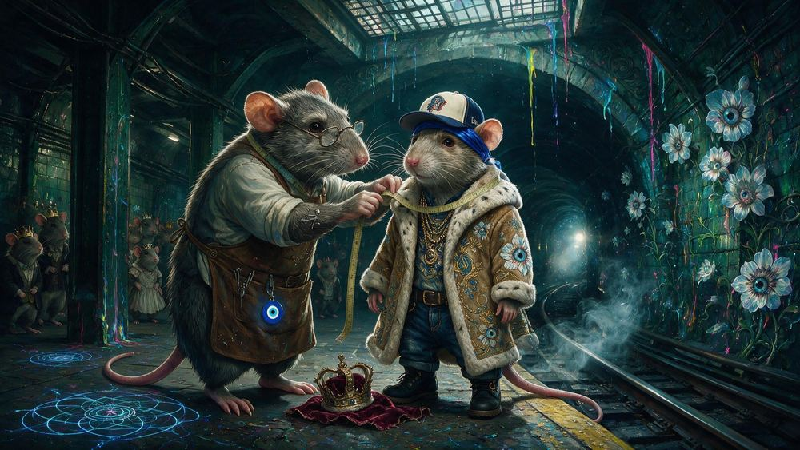
3D
GLB and art in, GLB out
Wrap any 3D model in a painting. Skin it, drape it or dissolve it, then download the new model.
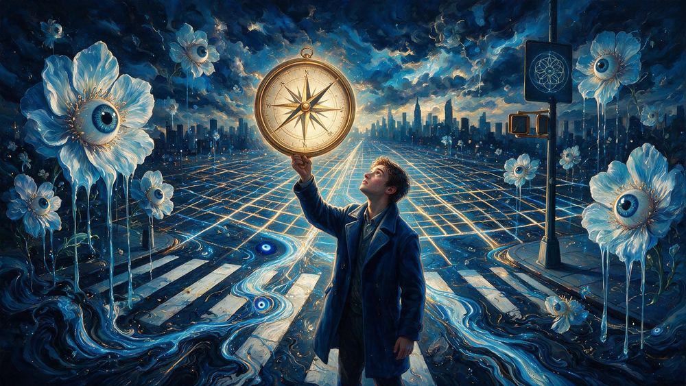
PAINT
Image in, XLSX · SVG · PNG out
Repaint any image cell by cell as a spreadsheet painting: a real Excel workbook, a vector SVG and a PNG.
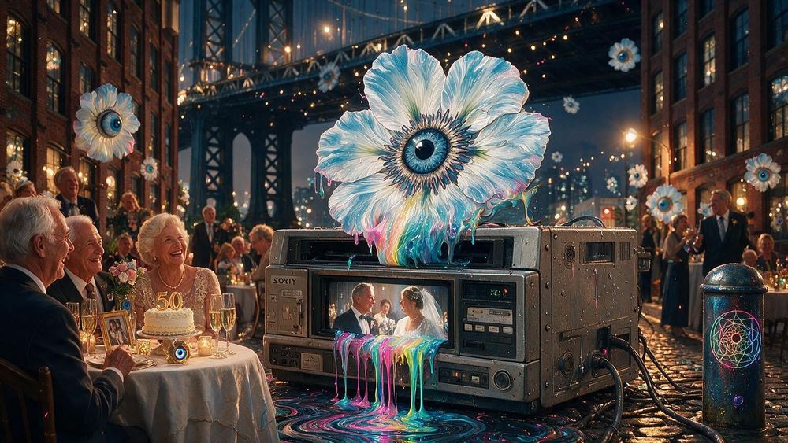
CONVERT
Video or stills in, GIF out
Every video becomes its own max quality GIF. Drop a stack of images instead and they become one slideshow.
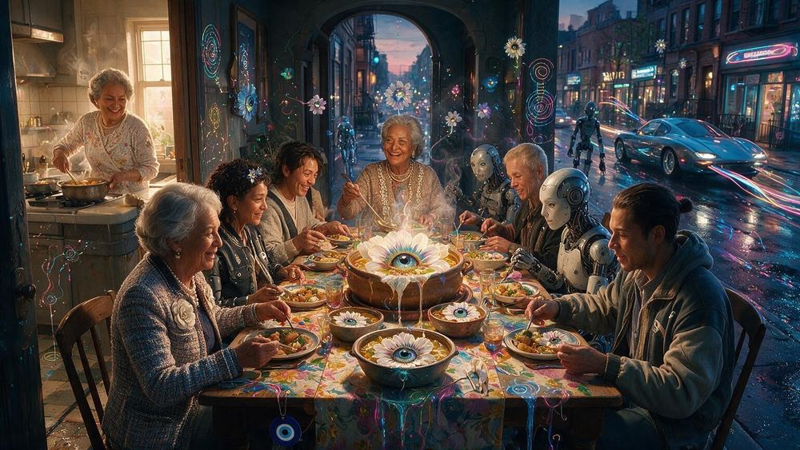
CONVERT
Video in, GIF under a size limit
The same engine fitted under a limit. It gives up colours first, then frames, and resolution only last.
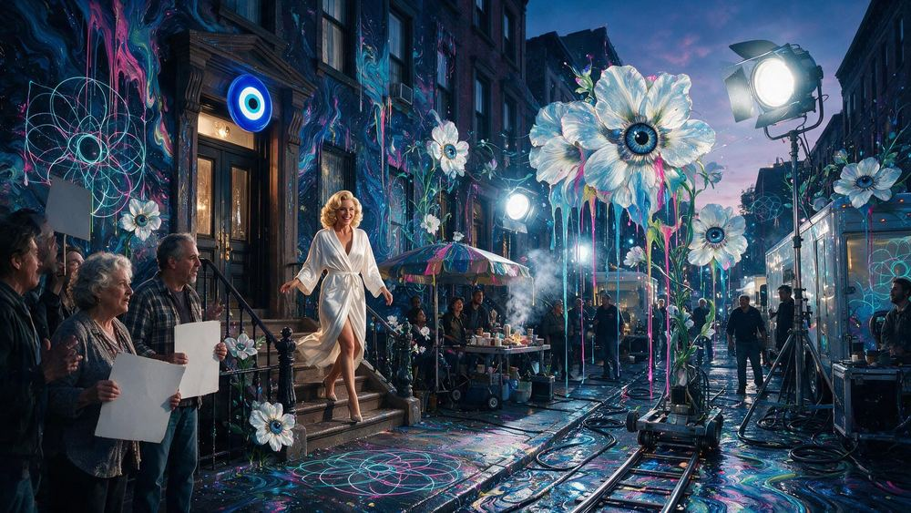
CONVERT
Video in, PNG frames out
Pull full resolution stills out of any clip, a few a second, for references, posters or contact sheets.
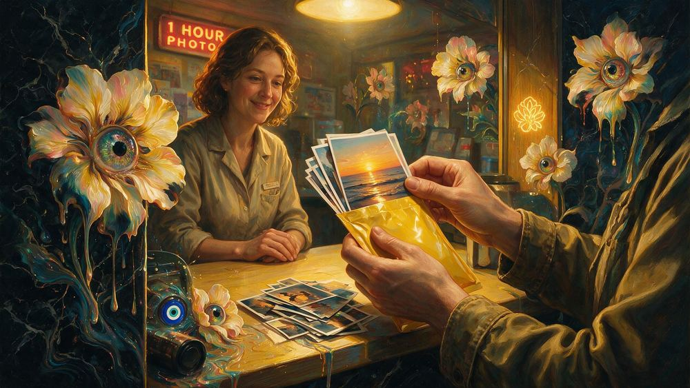
CONVERT
HEIC in, PNG out
iPhone photos to upright, full resolution PNGs. No sideways portraits.
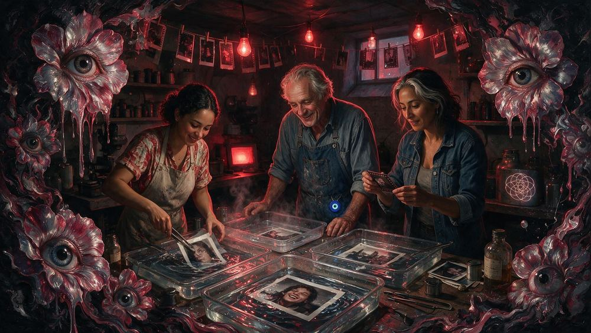
CONVERT
Camera RAW and HEIC in, PNG out
RAW from Nikon, Canon, Sony, Fuji and more, plus HEIC, out as clean PNGs.
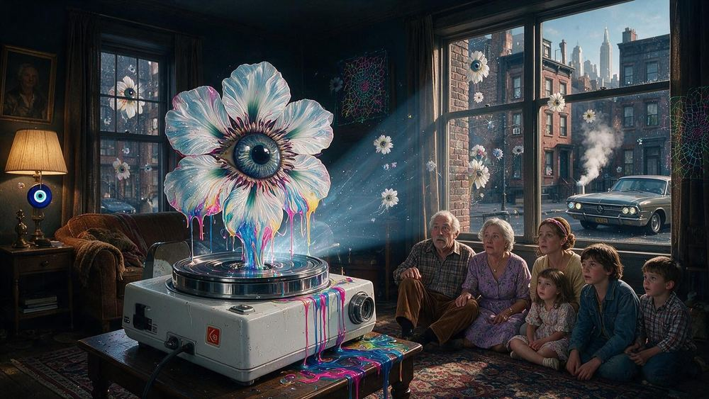
3D
The original, kept as it was
The first Safe Orbit Studio, here for the record. Spinlab is the one to use.
Each card is hung with a New Yorker from the census whose job fits the tool. The tools live on mvibe, MLow's home for them, with the source for every one at github.com/0xmlow/mvibe. Files you export carry a small maker's mark from MLow.